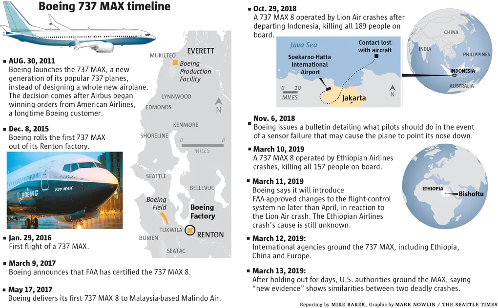
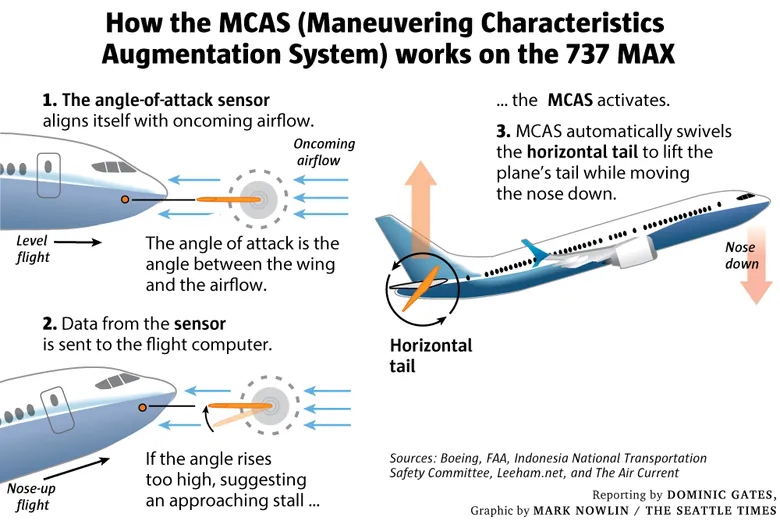

Boeing 737 MAX: Ethics, MCAS, and Responsibility
Abstract
This note examines the core ethical and management failures behind the MAX crisis-particularly the decision to release the Maneuvering Characteristics Augmentation System (MCAS) despite known risks-and asks how a fully informed leader should have acted differently. Moral responsibility is assigned within Boeing and to external parties (like the FAA), and the situation is analyzed using Kantian and Utilitarian ethical theories. Throughout, the tone remains measured and empathetic: 346 lives were lost, and any analysis must remember the human cost.
Keywords
MCAS, FAA, Boeing 737MAX, Kantian, Utilitarian
Introduction
The Boeing 737 MAX crisis was a profound tragedy that shook the aviation world. In late 2018 and early 2019, two brand-new Boeing 737 MAX jets-Lion Air Flight 610 and Ethiopian Airlines Flight 302-crashed within months of each other, killing 346 people and leaving families devastated (Schaper, 2020). These crashes were ultimately linked to a faulty software feature called the Maneuvering Characteristics Augmentation System (MCAS) (O'Kane, 2019).
MCAS was designed to help the MAX handle differently due to its larger, repositioned engines. Critically, it relied on a single faulty sensor and could repeatedly force the airplane’s nose down. In both accidents, pilots fought a relentless nosedive they could not overcome. In effect, Boeing and regulators unleashed a hidden danger that violated basic safety expectations. The public outcry was enormous. Governments worldwide grounded all 737 MAX planes. Boeing’s reputation plummeted. U.S. regulators and Congress launched deep investigations into what went wrong.
Background
In the early 2010s, Boeing rushed to develop the 737 MAX to compete with Airbus’s new A320neo. The MAX retained the 737’s 50-year-old fuselage design but needed larger engines for better fuel efficiency. These bigger engines sat forward and higher on the wing, which risked stalling (the nose pitching up). Boeing’s engineers designed MCAS as a software fix: it would automatically trim the horizontal stabilizer (push the nose down) if an approaching stall was detected. Critically, MCAS was set up to use only one Angle-of-Attack (AOA) sensor out of the two on the 737 MAX. If that sensor gave a false reading, MCAS could activate erroneously. Moreover, Boeing decided not to make MCAS widely known to pilots or airlines, aiming to present the MAX as just another 737 update and to avoid costly pilot retraining (O'Kane, 2019).
To put it briefly, important safety information was concealed in order to save time and money. Boeing management was facing tremendous commercial pressure. Congressional investigators later found that executives were anxious to meet production schedules and profit goals. Boeing even placed countdown clocks in factory conference rooms to urge engineers to “meet production timelines rather than safety” (Schaper, 2020). Training requirements were minimized: Boeing initially insisted pilots did not need simulator instruction on MCAS. And importantly, the Federal Aviation Administration (FAA) delegated much of the safety certification work to Boeing itself, a practice later criticized as giving the company too much unchecked authority.
By October 2018, the first 737 MAX jets were delivering to airlines. On October 29, 2018, Lion Air Flight 610 crashed into the Java Sea shortly after takeoff, killing everyone aboard. Boeing’s initial response downplayed the role of MCAS and suggested pilot error. But over the next months, investigators scrutinized flight data and found MCAS repeatedly pushing the nose down after a single faulty sensor. In March 2019, Ethiopian Airlines Flight 302 crashed under eerily similar circumstances, killing all 157 people on board. At that point, regulators globally grounded the MAX fleet.
The build-up to this crisis was therefore a mix of technical shortcuts and broken communication. Boeing’s engineers knew that MCAS could move the plane’s stabilizer with each trigger, potentially pushing it beyond the pilots’ ability to recover. Yet Boeing’s marketing and certification strategy treated MCAS as almost a non-entity. Even Airbus’s rival, for context, had designed its A320 neo with multiple redundancies and fully documented flight-control systems. Boeing’s approach reflected a decision to value market speed over exhaustive safety validation. As one aviation expert summed up: Boeing “unwisely used software to compensate for inadequacies in the hardware design” (Herkert et al., 2020).
Boeing & MCAS
The core problems in the 737 MAX case stem from that decision-making and its fallout. Technically, MCAS was flawed. It relied on one AOA sensor instead of two, so a single sensor fault could trigger it wrongly (Herkert et al., 2020). MCAS was powerful enough to trim the stabilizer nose-down repeatedly, and the software did not limit its authority.
As a result, both crashes involved MCAS pushing the nose down until pilots could not pull out. Boeing later agreed to software fixes: updated MCAS now takes input from both AOA sensors, cuts in only once per event, and includes new limits and warning lights. But these fixes came too late.
Equally important were the organizational failures. Inside Boeing, a “culture of concealment” took hold. Critical information was withheld. For example, Boeing did not initially tell pilots about MCAS at all. The company also left disabled the AOA Disagree alert light on most 737 MAX cockpits (unless an airline paid extra), which could have warned of a bad sensor. Congressional investigators noted that “misguided priorities of senior management” led to decisions that put “profits ahead of safety,” even going so far as to countdown the production schedule in meeting rooms. In Boeing factories, employees later reported feeling relentless schedule pressure: a 2024 survey found only 47% of workers agreed “schedule pressures do not cause my team to lower our standards” (Senate, 2024). Safety tests were streamlined from design to production.
The FAA is notable in this regard. Although the FAA mostly depended on Boeing's own engineers for certification, the agency's auditors were officially entrusted with verifying aircraft safety. An accelerated certification procedure designed for minor variations was used for the 737 MAX. The fact that authorities declared the jet "compliant" despite its obvious danger was described as "mindboggling" by one congressman. In fact, the House Transportation Committee report summarized that Boeing’s “faulty technical assumptions,” paired with FAA’s “grossly insufficient oversight,” played an “instrumental” role in the disasters (Schaper, 2020). Captain Chesley “Sully” Sullenberger-hero of the Hudson River landing-wrote that MCAS “should never have been approved, not by Boeing, and not by the Federal Aviation Administration” (Herkert et al., 2020).
He reasons that both Boeing’s corporate judgments and FAA’s regulatory compliance missed the ethical obligation to protect lives. Moral responsibility can be assigned at multiple levels. At Boeing, ultimate responsibility lay with top leadership (CEO and the board) for setting the priorities. Dennis Muilenburg and other executives pushed to maintain schedules despite warnings. Program managers and engineers also share blame: some safety-concern emails at Boeing went unanswered or were downplayed. The mantra among decision-makers was whether to get the jet flying quickly; that question overshadowed whether it was safe to do so (Herkert et al., 2020).
Externally, the FAA (and indirectly, airline customers) bear responsibility. The FAA had a legal duty to certify safety, but its delegation policies blurred accountability. For example, Boeing quality inspectors were allowed to approve their own work, creating a conflict of interest. A 2024 FAA audit even found dozens of compliance failures at Boeing plants (Senate, 2024). Airlines might also share some ethical burden; by demanding minimal training, they tacitly pressured Boeing to hide MCAS. However, the decisive moral choices were Boeing’s. Subcontractors (like the sensor manufacturer) had less agency in this design. The FAA’s allowance for expedited certification and self-assessment meant the ethical safeguards built into regulation were essentially removed.
Kantianism
From a Kantian (deontological) perspective, morality is about duty and universal principles, not consequences (Britannica, 2025). Immanuel Kant’s categorical imperative demands that one “act only on that maxim through which you can… will that it should become a universal law.” It also says to treat humanity “always at the same time as an end and never merely as a means.” Applied here, Boeing’s hidden-MCAS strategy would fail Kant’s test. The implied maxim might be: “It is acceptable to withhold vital safety information from pilots to save costs.” Universalizing that rule would lead to chaos: no one could trust manufacturer claims. It treats passengers and crew as mere means to profit (ignoring their autonomy and safety). Kantian ethics would condemn Boeing’s choice because it violates the duty of honesty and the duty to preserve human life as an end in itself.
Likewise, the FAA’s commitment to “compliance over safety” was a breach of regulatory duty: if every regulator simply rubber-stamped manufacturer data, the system could not protect the public, which Kantian morality would view as fundamentally wrong. In short, the categorical imperative demands we make safety non-negotiable and transparent, which was not the path Boeing took.
Utilitarianism
In contrast, utilitarianism is a consequentialist theory that judges actions by their outcomes (West, 2025). It holds that the morally right action is the one that produces the greatest overall good (happiness, safety, well-being) for the greatest number of people. From a utilitarian standpoint, Boeing’s decisions must be judged by the balance of benefit versus harm. In the short term, Boeing and its customers might have seen benefit: reduced costs, cheaper training, more sales, and profits that could (in theory) benefit shareholders, employees, and even fuel lower fares for passengers. If the MAX flew without incident, the overall utility would seem positive. However, the actual outcomes were catastrophic. The crashes caused immense harm: 346 lives lost, plus the grief and suffering of families, communities, and flight crews. The grounding of the fleet caused billions in losses to airlines and Boeing, job cuts, and shaken confidence in air travel safety. On net, the harm far outweighed the temporary gain.
A utilitarian calculus would clearly find that a different action-delaying the release of MCAS until fully safe, and properly training pilots-would have produced a better overall result (lives saved, trust maintained) even if it meant short-term financial pain. In other words, the “greatest good” was served by putting lives first. Professor Gregory Travis noted that Boeing’s reliance on MCAS was like using software “to compensate for inadequacies in the hardware design,” and that not disclosing MCAS was done to avoid costly certification demands (Herkert et al., 2020). A pure utilitarian would say those choices failed to maximize collective well-being. The aftermath proved this: the loss of 346 lives is an immense negative utility that dwarfs any benefits Boeing gained by cutting corners. Thus, utilitarianism would judge Boeing’s and the FAA’s actions as morally wrong, since they resulted in the opposite of the greatest good.
Problems and Solutions
Looking forward, what should a well-informed leader have done differently? If I were a Boeing executive who fully appreciated MCAS’s risks before release, several moral courses would guide me:
- Prioritize Safety Over Schedule: Delay the 737 MAX launch until MCAS was failsafe, even if it meant extra costs or conceding market share to Airbus in the short term. Redesign MCAS to use both AOA sensors and add limits on how much it can move the stabilizer (as was done later) (Herkert et al., 2020).
- Full Transparency: Immediately inform regulators, customers, and pilots about MCAS. Update pilot manuals and require simulator training so pilots know how to counter any un-commanded nose-down trim. Withholding such information is ethically indefensible.
- Strengthen Internal Checks: Create safe channels for engineers and whistleblowers to voice concerns, and ensure management listens. Reward rigorous testing and questioning, rather than punishing delays.
- Collaborate with Regulators: Treat the FAA as a true partner in safety. Support independent reviews, share all technical data, and invite outside experts to audit new systems.
- Reform Corporate Culture: Shift emphasis from profits to ethics. Tie goals and bonuses to safety metrics as well as financial ones. Replace countdown clocks with “Stop-the-line” policies, where any employee can halt production for a safety issue.
For broader issues, the FAA must overhaul its oversight model. One solution is to reduce the scope of delegation: Boeing should not be allowed to certify its own work on safety-critical systems. Instead, the FAA or independent agencies should verify designs. Implementing recommendations from the Joint Authorities Technical Review and NTSB would ensure better risk assessment (Herkert et al., 2020). Congress is already working on legislation to reform aircraft certification. Meanwhile, airlines could insist on better safety practices as a condition of purchase. Ethically, these solutions align with both Kantian and utilitarian ideals: they respect the duty to be truthful and value human life (Kant), and they seek to maximize overall safety and welfare (Utilitarian).
Conclusion
The Boeing 737 MAX case offers a clear lesson in business ethics and regulatory responsibility. The main mistake was the deliberate decision to deploy a new aircraft with a known risk, putting money and schedule ahead of the lives of the passengers. According to utilitarian analysis, this caused considerably more harm than good, and Kantian analysis demonstrates that it cannot be justified as a universal law or as treating people with respect. Responsibility lies chiefly with Boeing’s leadership, but also with regulators who abdicated their oversight role. These accidents “should never have happened,” as Captain Sullenberger testified (Herkert et al., 2020). They must not happen again. The ethical reforms needed are clear: honesty, transparency, and a bedrock commitment to safety. Leaders must ensure that in every decision, human life and well-being come before profit.
References
- Gates, D. (2023). The inside story of MCAS: How Boeing’s 737 MAX system gained power and lost safeguards. Link
- O’Kane, S. (2019, December 23). Boeing CEO pushed out Amid 737 Max Crisis. The Verge. Link
- Schaper, D. (2020, September 16). Congressional inquiry faults Boeing and FAA failures for Deadly 737 Max Plane Crashes. NPR. Link
- Herkert, J., Borenstein, J., & Miller, K. (2020). The Boeing 737 MAX: Lessons for Engineering Ethics. Science and Engineering Ethics, 26(6), 2957–2974. Link
- Senate, U. S. (2024). New details of Boeing’s safety failures and pressure to ... Link
- Encyclopædia Britannica, inc. (2025, March 27). Deontological ethics. Encyclopædia Britannica. Link
- West, H. R. (2025, April 21). Utilitarianism. Encyclopædia Britannica. Link